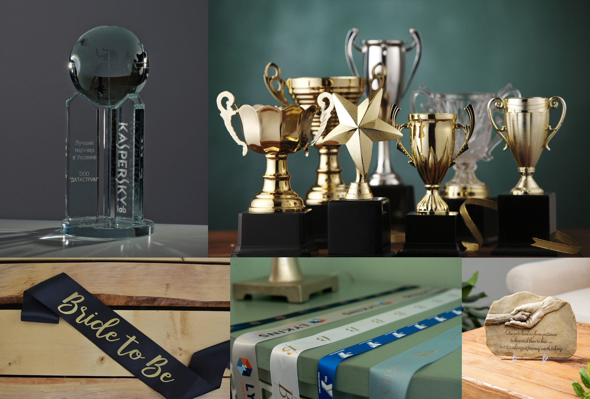

Architectural Shop Facades
In the architectural landscape of Qatar, Mars Signs provides the foundational visual infrastructure for industry leaders. Our approach to retail facades is rooted in the convergence of high-durability materials and localized design intelligence. We recognize that in a climate as demanding as Doha's, longevity is as vital as aesthetics. A shop facade is not just a sign; it is the first point of contact between your business and the public, requiring a design that commands respect while standing up to the elements. We engineer weather-resistant facades that maintain a minimalist visual identity, ensuring your business maintains a commanding presence throughout the retail sector.

Our fabrication processes—from precision CNC cutting to premium substrate selection—are vetted against rigorous environmental standards. We don't just build facades; we construct landmarks that speak to your clients before they even step through the door. We manage every phase of the project with expertise, making sure your vision is realized to the highest possible standard. We are excited to build your next shop facade with you, turning your storefront into a beacon of quality in the heart of Qatar. If you are ready for a facade that stands the test of time, feel free to hire us, and let’s construct your brand’s future together.